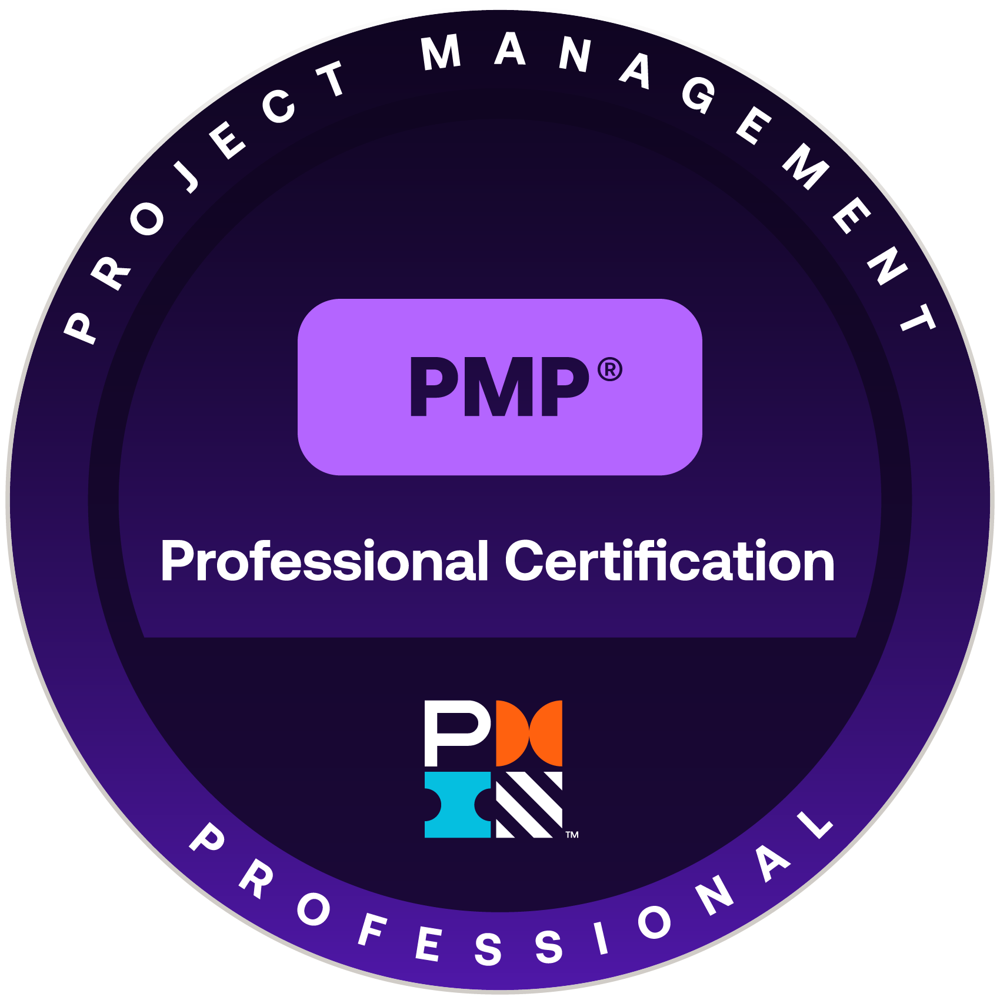

PMP Certified · Project Controls & Governance · Aerospace. Three years building the project controls discipline that keeps safety-critical programmes on schedule, on budget, and audit‑ready.
A structured summary of the skills, sectors and standards that shape my delivery approach.
PMO professional with 3+ years of experience supporting the delivery of complex, safety-critical programmes within a regulated aerospace environment. Strong foundations in project controls, scope and change management, risk management, and stakeholder reporting — built through hands-on delivery on programmes where audit-readiness is non-negotiable. Comfortable across the breadth of PMO disciplines including critical path monitoring, milestone tracking, budget tracking, and structured reporting for Senior Management — with Power BI and Excel underpinning much of the day-to-day automation and visibility work. Holds the Project Management Professional (PMP) certification from PMI — the globally recognised equivalent of APM PMQ — earned through structured study and applied programme delivery experience.
From a childhood ambition to an aerospace degree, a move to the UK, and a career in programme controls — the milestones that connect the dots.
Two interactive Power BI-style dashboards demonstrating the kind of reporting I build day-to-day. The Programme Controls view tracks burndown, RAID, milestones and KPIs across a mock aerospace portfolio. The SQCDPI Performance view shows daily operational standards adherence — built as 31 calendar-aligned segments per pillar, a layout that's surprisingly difficult to replicate in Power BI's native visuals. Toggle between them, filter by project, and pick a month.
Burndown · Tasks Remaining
RAID Log · Top Items
Milestone Tracker
Glossary
Project timeline — as a Gantt chart, naturally.
Outcomes — not activities. The numbers behind the governance, reporting and delivery work.
Automated daily PMO reporting using Power BI and Excel — cutting per-day effort from 30–45 minutes to 10–15, with dashboards now used across multiple departments for live programme visibility.
Read the full story →Contributed to migrating from email-based to folder-based programme tracking, evaluated Smartsheet adoption, and now leading research into Power Automate integration with manager-endorsed scope.
Routinely interfacing with Engineering, Quality, Programmes, Operations, and Purchasing — keeping delivery aligned and managing stakeholder expectations across functions throughout the programme lifecycle.
Maintained complete documentation traceability across scope, change, and decision records — ensuring programme data passed all internal and customer audits.
Filter by discipline.
Formal credentials and the structured professional development plan in progress.

Hello from the other side!